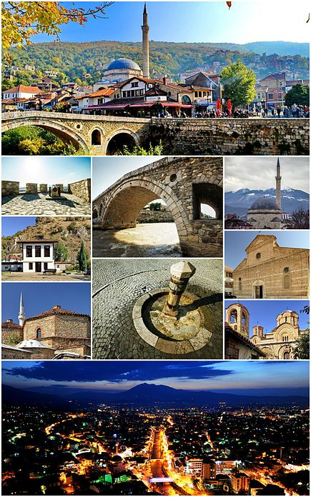
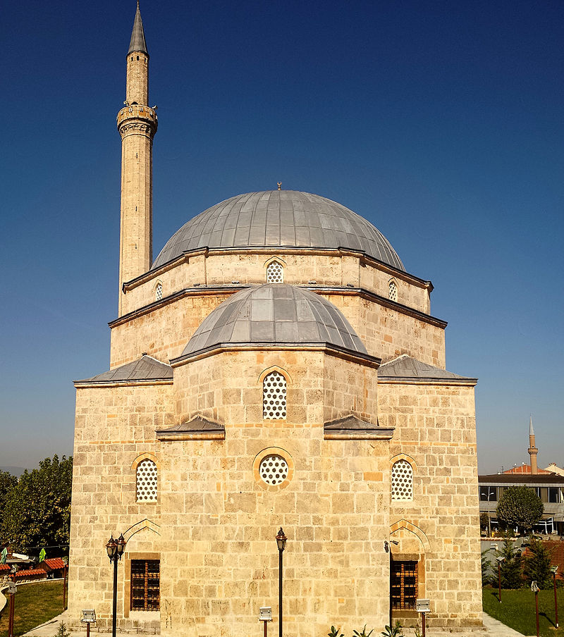
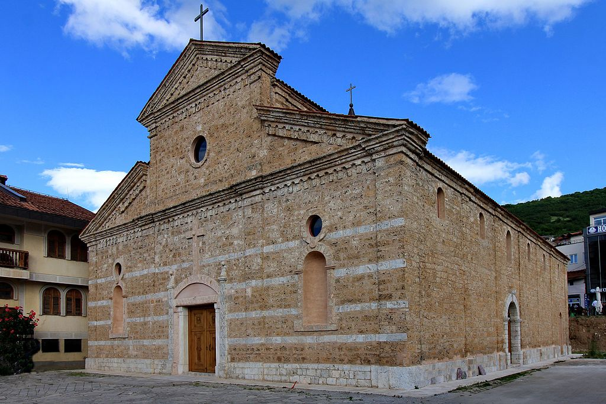
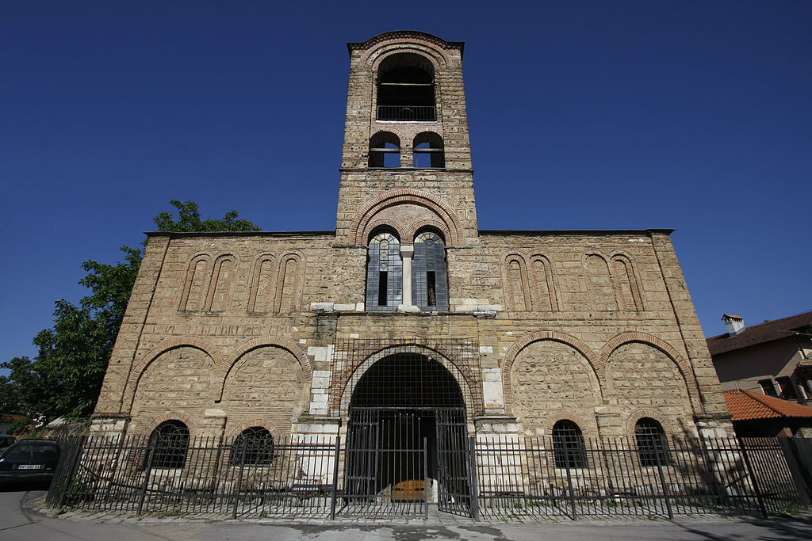
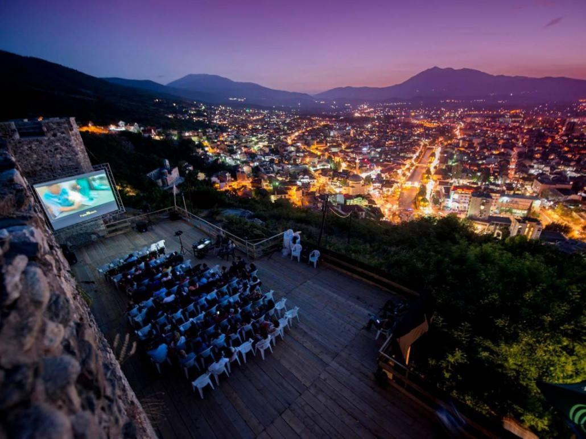

Prizren (definite Albanian form: Prizreni pronounced [priˈzr:ɛni] is the second most populous city and municipality of Kosovo and seat of the eponymous municipality and district. It is located on the banks of the Prizren River between the foothills of the Sharr Mountains in southern Kosovo. Prizren experiences a Oceanic climate under the influence of the surrounding mountains. Prizren is constitutionally designated as the historical capital of the country. Archaeological excavations in Prizren Fortress indicate that its fortress area has seen habitation and use since the Bronze Age. Prizren has been traditionally identified with the settlement of Theranda in Roman Dardania, although other locations have been suggested in recent research. In late antiquity it was part of the defensive fortification system in western Dardania and the fort was reconstructed in the era of eastern Roman Emperor Justinian. Byzantine rule in the region ended definitively in 1219-20 as the Serbian Nemanjić dynasty controlled the fort and the town until 1371. Since 1371, a series of regional feudal rulers came to control Prizren: the Balšić, the Dukagjini, the Hrebeljanović and finally the Branković, often with Ottoman support. The Ottoman Empire assumed direct control after 1450. Prizren first developed in the area below the fortress which overlooks the Bistrica river on its left bank. Since the 16th century, economic development fueled the expansion of the city's neighbourhoods to the river's right bank.

Prizren has been traditionally identified with Theranda, a town of the Roman era.
Another location which may have been that of Theranda is present-day Suhareka as has been suggested in recent research.
Archaeological research has shown that the site of the Prizren Fortress has had several eras of habitation since prehistoric times.
In its lower part, material from the upper part of the fort has been deposited over the centuries.
It dates from the Middle Bronze Age (c. 2000 BCE) to the late Iron Age (c. 1st century CE) and is comparable to the material found in the nearby
prehistoric site in the village of Vlashnjë (~10 km west of Prizren).
In 2005, prehistoric rock paintings in a ritual site related to the cycle of life were found near Vlashnjë.
They represent the first find of prehistoric rock art in the region.
In late antiquity, the fortification saw a phase of reconstruction.
It is part of a series of forts that were built or reconstructed in the same period by Justinian along the White Drin in northern
Albania and western Kosovo in the routes that linked the coastal areas with the Kosovo valley.
At this time, the Prizren fortress likely appears in historical record as Petrizen in the 6th century CE in the work of Procopius as one of
the fortifications which Justinian commissioned to be reconstructed in Dardania.
Konstantin Jireček concluded, from the correspondence of archbishop Demetrios of Ohrid (1216–36),
that Prizren was the northeasternmost area of Albanian settlement prior to the Slavic expansion that began in the 6th century.
Prizren is located on the foothills of the Šar Mountains (Albanian: Malet e Sharrit) in southern Kosovo on the banks of Prizren River. Prizren Mnicipality borders Albania to the southweast and North Macedonia to the southeast.
Prizren is a municipality governed by a mayor–council system. The mayor of Prizren with the members of the Prizren Municipal Council are responsible for the administration of Prizren Municipality. The municipality is encompassed in Prizren District and consists of 76 adjacent settlements with Prizren as its seat.
For a long time the economy of Kosovo was based on the retail industry fueled by remittance income coming from a large number of immigrant communities in Western Europe. Private enterprise, mostly small business, is slowly emerging. Private businesses, like elsewhere in Kosovo, predominantly face difficulties because of a lack of structural capacity to grow. Education is poor, financial institutions basic, and regulatory institutions lack experience. Securing capital investment from foreign entities cannot emerge in such an environment. Due to financial hardships, several companies and factories have closed and others are reducing personnel. This general economic downturn contributes directly to the growing rate of unemployment and poverty, making the economic viability in the region more tenuous. Many restaurants, private retail stores, and service-related businesses operate out of small shops. Larger grocery and department stores have recently opened. In town, there are eight sizeable markets, including three produce markets, one car market, one cattle market, and three personal hygiene and houseware markets. There is an abundance of kiosks selling small goods. However, reducing international presence and repatriation of refugees and internally displaced persons is expected to further strain the local economy. Market saturation, high unemployment, and a reduction of financial remittances from abroad are negative economic indicators.[63] There are three agricultural co-operatives in three villages. Most livestock breeding and agricultural production are private, informal, and small-scale. There are nine operational banks with branches in Prizren, ProCredit Bank, the Raiffeisen Bank, the NLB Bank, TEB Bank, Banka për Biznes (Bank for Business), İşbank, Banka Kombëtare Tregtare (National Trade Bank), Iutecredit, and the Payment and Banking Authority of Kosovo (BPK).
All the main roads connecting the major villages with the urban centre are asphalted. The water supply is functional in Prizren town and in approximately 30 villages. There is no sewage system in the villages. Power supply is still a problem, especially during the winter and in the villages.



As of the Kosovo Agency of Statistics (KAS) estimate from the 2011 census,
there were 177,781 people residing in Prizren Municipality,
representing the second most populous city and municipality of Kosovo.
Its urban population was approximately 94,500, while the rural population was around 83,000.
With a population density of 283,5 people per square kilometre,
Prizren is among the most densely populated municipalities of Kosovo.
In terms of ethnicity, as of the 2011 census, Prizren Municipality was 82% Albanian,
9.50% Bosniak, 5.11% Turkish, 1.63% Romani, 0.76% Ashkali, 0.37% Gorani, 0.13% Serbian,
0.09 Egyptian and 0.34% of unknown ethnicity.
By religion, there were 170,640 (95.98%) Muslims, 5,999 (3.37%) Roman Catholics,
250 (0.14%) Orthodox, 807 (0.45%) of other religions and 85 (0.05%) irreligious.
By language, 82.68% of the population spoke Albanian as their first language.
Other spoken languages include Bosnian (10.16%), Turkish (5.78%), Romani (0.55%),
Serbian (0.21%) and other languages (0.62%).

Regarded as the historical capital of Kosovo, Prizren has been home to many different religions and cultures for centuries, shaping the cultural heritage of the city. Prizren is also considered as a museum city with many mosques, churches and old buildings of national importance. The Fortress of Prizren located above the Prizren River has seen habitation and use throughout different periods since the Bronze Age. Among the artifacts of the Middle Ages are the Sinan Pasha Mosque, Our Lady of Perpetual Succour Cathedral, Holy Saviour Church, Katip Sinan Qelebi Mosque, Holy Archangels Monastery, St. Nicholas Church, Muderiz Ali Effendi Mosque and the UNESCO World Heritage Site Our Lady of Ljeviš. The annual Dokufest International Film Festival held in Prizren is considered among the largest publicly attended film festival in the Balkans. Several art and music festivals and conferences are held in the city, including the 40BunarFest and NGOM Fest, with the main objectives to promote artists and to connect the different ethnic groups in the surrounding region. ^